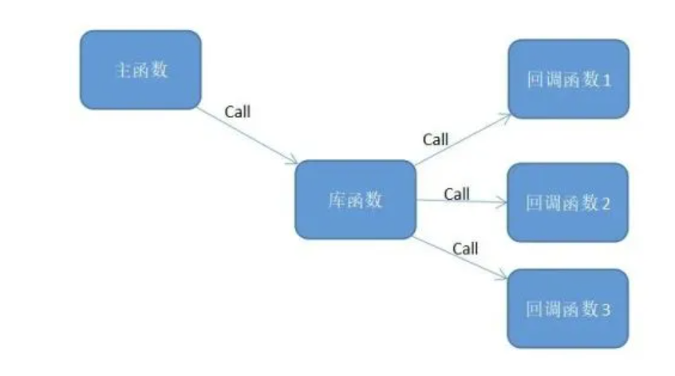

1.概念介绍
我的理解是：把一段可执行的代码像参数传递那样传给其他代码，而这段代码会在某个时刻被调用执行，这就叫做回调。
如果代码立即被执行就称为同步回调，如果过后再执行，则称之为异步回调。
回调函数就是一个通过函数指针调用的函数。如果你把函数的指针（地址）作为参数传递给另一个函数，当这个指针被用来调用其所指向的函数时，我们就说这是回调函数。
回调函数不是由该函数的实现方直接调用，而是在特定的事件或条件发生时由另外的一方调用的，用于对该事件或条件进行响应。
2.为什么需要回调函数
因为可以把调用者与被调用者分开，所以调用者不关心谁是被调用者。它只需知道存在一个具有特定原型和限制条件的被调用函数。
简而言之，回调函数就是允许用户把需要调用的方法的指针作为参数传递给一个函数，以便该函数在处理相似事件的时候可以灵活的使用不同的方法。

int Callback() ///< 回调函数
{
// TODO
return 0;
}
int main() ///< 主函数
{
// TODO
Library(Callback); ///< 库函数通过函数指针进行回调
// TODO
return 0;
}
回调似乎只是函数间的调用，和普通函数调用没啥区别。
但仔细看，可以发现两者之间的一个关键的不同：在回调中，主程序把回调函数像参数一样传入库函数。
这样一来，只要我们改变传进库函数的参数，就可以实现不同的功能，这样有没有觉得很灵活？并且当库函数很复杂或者不可见的时候利用回调函数就显得十分优秀。
3.如何使用回调函数
int Callback_1(int a) ///< 回调函数1
{
printf("Hello, this is Callback_1: a = %d ", a);
return 0;
}
int Callback_2(int b) ///< 回调函数2
{
printf("Hello, this is Callback_2: b = %d ", b);
return 0;
}
int Callback_3(int c) ///< 回调函数3
{
printf("Hello, this is Callback_3: c = %d ", c);
return 0;
}
int Handle(int x, int (*Callback)(int)) ///< 注意这里用到的函数指针定义
{
Callback(x);
}
int main()
{
Handle(4, Callback_1);
Handle(5, Callback_2);
Handle(6, Callback_3);
return 0;
}
如上述代码：可以看到，Handle()函数里面的参数是一个指针，在main()函数里调用Handle()函数的时候，给它传入了函数Callback_1()/Callback_2()/Callback_3()的函数名，这时候的函数名就是对应函数的指针，也就是说，回调函数其实就是函数指针的一种用法。
4.回调函数使用示例（ ）
一个GPRS模块联网的小项目，使用过的同学大概知道2G、4G、NB等模块要想实现无线联网功能都需要经历模块上电初始化、注册网络、查询网络信息质量、连接服务器等步骤，这里的的例子就是，利用一个状态机函数（根据不同状态依次调用不同实现方法的函数），通过回调函数的方式依次调用不同的函数，实现模块联网功能，如下：
/********* 工作状态处理 *********/
typedef struct
{
uint8_t mStatus;
uint8_t (* Funtion)(void); //函数指针的形式
} M26_WorkStatus_TypeDef; //M26的工作状态集合调用函数
/**********************************************
** >M26工作状态集合函数
***********************************************/
M26_WorkStatus_TypeDef M26_WorkStatus_Tab[] =
{
{GPRS_NETWORK_CLOSE, M26_PWRKEY_Off }, //模块关机
{GPRS_NETWORK_OPEN, M26_PWRKEY_On }, //模块开机
{GPRS_NETWORK_Start, M26_Work_Init }, //管脚初始化
{GPRS_NETWORK_CONF, M26_NET_Config }, /AT指令配置
{GPRS_NETWORK_LINK_CTC, M26_LINK_CTC }, //连接调度中心
{GPRS_NETWORK_WAIT_CTC, M26_WAIT_CTC }, //等待调度中心回复
{GPRS_NETWORK_LINK_FEM, M26_LINK_FEM }, //连接前置机
{GPRS_NETWORK_WAIT_FEM, M26_WAIT_FEM }, //等待前置机回复
{GPRS_NETWORK_COMM, M26_COMM }, //正常工作
{GPRS_NETWORK_WAIT_Sig, M26_WAIT_Sig }, //等待信号回复
{GPRS_NETWORK_GetSignal, M26_GetSignal }, //获取信号值
{GPRS_NETWORK_RESTART, M26_RESET }, //模块重启
}
/**********************************************
** >M26模块工作状态机，依次调用里面的12个函数
***********************************************/
uint8_t M26_WorkStatus_Call(uint8_t Start)
{
uint8_t i = 0;
for(i = 0; i < 12; i++)
{
if(Start == M26_WorkStatus_Tab[i].mStatus)
{
return M26_WorkStatus_Tab[i].Funtion();
}
}
return 0;
}
所以，如果有人想做个NB模块联网项目，可以copy上面的框架，只需要修改回调函数内部的具体实现，或者增加、减少回调函数，就可以很简洁快速的实现模块联网。